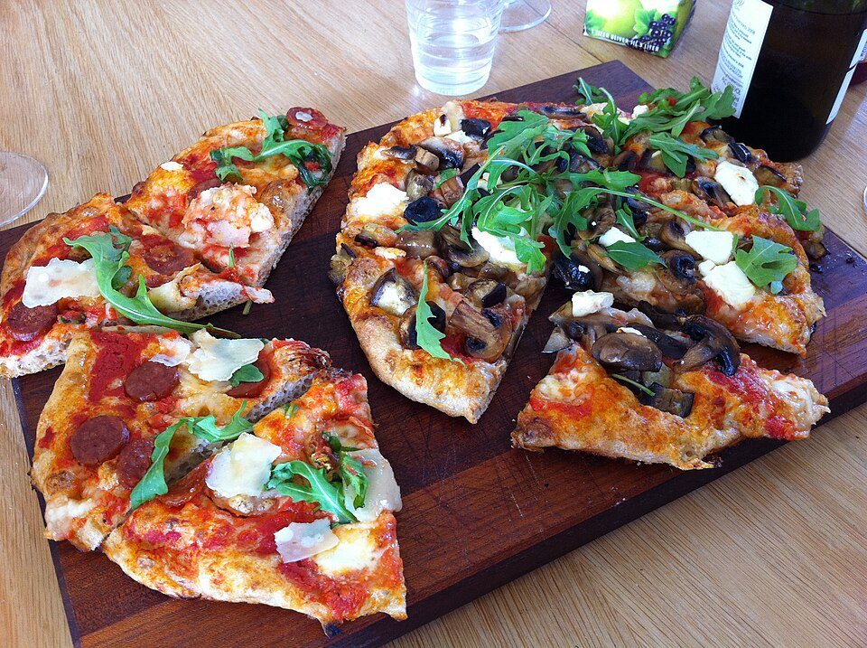

Favorite Food: Pizza

Pizza is my favorite food, hands down. There's something about the combination of a good crust, melted cheese, and toppings that makes it endlessly customizable — whether it's a classic cheese pizza or something more adventurous.
Whether it's from a fast food chain or homemade, it's the meal I could eat every week and never get tired of.
My go-to toppings
- Philly steak
- grilled onions
- Extra cheese
Why it wins for me
- Best crust style
- handmade pan
- Best occasion
- Late-night study breaks while watching a show
For anyone curious about the history behind it, this brief history of pizza from History.com is a fun read.